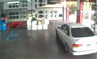
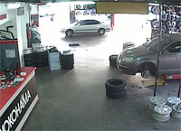
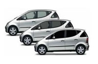

|

Aliniación y Balanceo
La y el de los neumáticos permiten alargar su vida
útil y generar mayor confort y seguridad durante la conducción.
El servicio de alineación que realizamos se realiza mediante sistemas
computarizado. Cada revisión mide los ángulos de pisada de las cubiertas
para corregirlos y llevarlos posteriormente a los valores dictaminados
por el fabricante del rodado.
Tambien verificamos los componentes del tren delantero y trasero,
las llantas y los neumáticos para buscar posibles deformaciones,
y verificamos la altura de la carrocería en cuatro puntos de referencia
para hacer todos los ajustes necesarios.
Recomendamos a nuestros clientes que la alineación se haga cada
10.000 kilómetros.
En cuanto al balanceo de las ruedas es importante realizarlo para evitar las
vibraciones del vehículo que pueden dañar el sistema de suspensión y
el desgaste rápido y desparejo de las bandas de rodamiento.
Hay que hacerlo periódicamente o cuando se perciba una oscilación en el volante una velocidad mayor de 80 km/h.

Amortiguación y Frenos
Los de los autos se encuentran cerca de cada rueda.
En la actualidad muchos autos ya no cuentan con amortiguadores, sino que vienen equipados con suspensión de tipo puntal, ambos cumplen la misma función y se controlan de la misma manera.
No se puede establecer cada cuanto tiempo debemos reemplazar los amortiguadores de nuestro auto,
eso dependerá sobre todo del uso y cuidados que le demos y de los caminos y la forma en que manejemos.
Los amortiguadores en buen estado nos proporcionarán un auto más estable en curvas, cuando frenemos y
todo su manejo será mucho más sencillo y confortable.
También podemos darnos cuenta que nuestros amortiguadores necesitan un cambio, si cuando estamos circulando y pasamos encima de un pozo, sentimos un golpe seco en la carrocería.
Nosotros aconsejamos que conveniente una revisión visual, para esto debemos controlar las gomas,
los topes y los puntos de montaje del amortiguador, los mismos no deben presentar signos de corrosión,
ni encontrarse húmedos o mojados, ya que esto indicaría que existe una fuga de líquidos.
En este caso, habrá que reemplazarlos de inmediato.
Los son un componente vital de los automóviles y se usan para desacelerar o para detener el coche. Es una de las partes más importantes de los autos.
Cualquier falla en los frenos puede causar un accidente. Es muy importante controlar los frenos, especialmente el fluido hidráulico del sistema.
Es necesario limpiar los frenos y revisar las pastillas de freno para asegurarse que están en buenas condiciones. También hay que revisar las mangueras y otros conductos del sistema de frenos por si hay pérdidas.

Polarizado de Cristales
Polarizar los cristales del auto ofrece múltiples ventajas: privacidad, reducción del calor en el habitáculo (lo que mejora el rendimiento del aire acondicionado), un aspecto más atractivo, etc.
El polarizado consiste en adherir a los cristales una lámina translúcida (existen varias tonalidades para elegir). La tarea requiere cuidado y precisión, pero no es complicada.
|